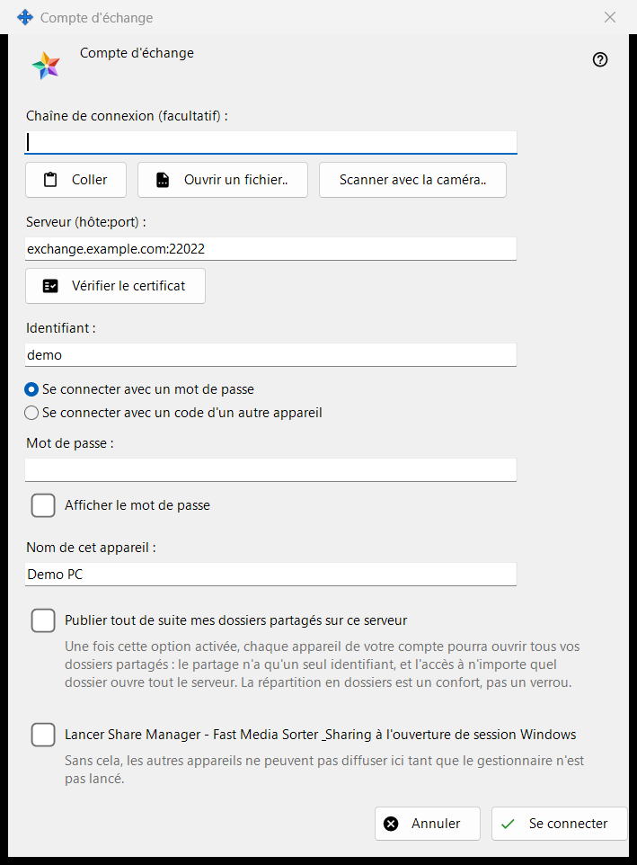
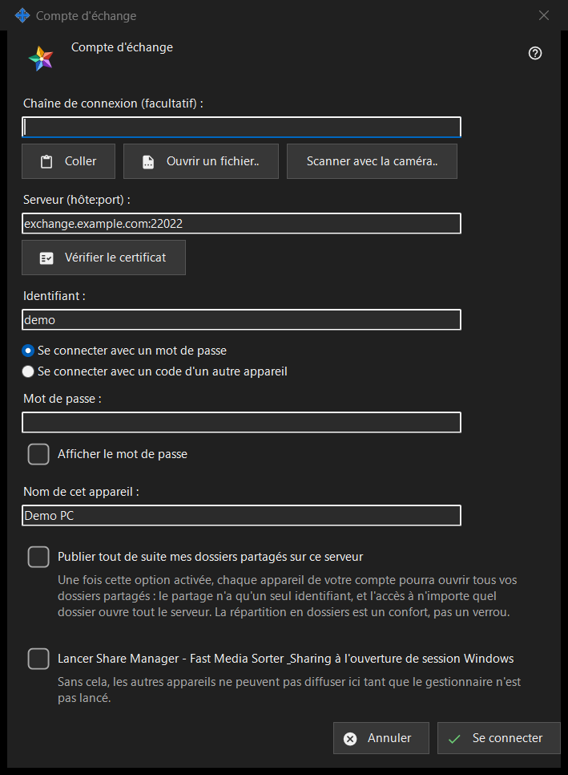

Compte d'échange
Objectif
Connecte ce PC comme appareil d'un compte sur un Media Exchange Server. La fenêtre s'ouvre depuis le bouton «Se connecter..» de la page Compte d'échange des paramètres de Share Manager, et depuis «Publier via un serveur d'échange..», qui l'ouvre avec l'option de publication déjà cochée.


Dans cet ordre
- Si vous le souhaitez, collez, ouvrez ou scannez une chaîne de connexion ; elle renseigne le serveur et l'identifiant.
- Cliquez sur «Vérifier le certificat» et, sauf si le système lui fait confiance ou si la chaîne le contenait, comparez l'empreinte avec celle de l'opérateur, puis cliquez sur «Faire confiance à ce certificat».
- Saisissez l'identifiant et le mot de passe ou le code d'appairage.
- Définissez le nom de l'appareil et les options.
- Cliquez sur «Se connecter».
Les éléments
Chaîne de connexion
«Chaîne de connexion (facultatif) :» accepte une chaîne que vous collez avec «Coller», chargez depuis un fichier .fmsexch ou une image QR avec «Ouvrir un fichier..», ou lisez avec «Scanner avec la caméra..». Elle renseigne seulement le serveur et l'identifiant ; rien ne se connecte avant que vous cliquiez sur «Se connecter». Une chaîne contenant une empreinte épingle ce certificat, il n'y a donc rien à comparer à la main. Une chaîne contenant une invitation fait passer la fenêtre en mode inscription. Une chaîne inutilisable reçoit un refus d'une ligne.
Serveur et certificat
«Vérifier le certificat» se connecte à «Serveur (hôte:port) :» et affiche «Empreinte du certificat du serveur :». Si le système fait confiance au certificat, il n'y a rien à épingler. Sinon, comparez l'empreinte avec celle que l'opérateur du serveur vous a donnée et cliquez sur «Faire confiance à ce certificat» ; seul ce bouton accepte un certificat que le système ne connaît pas. Modifier le texte du serveur fait oublier la vérification. La touche Entrée ne fait rien tant qu'aucun certificat n'est approuvé, de sorte qu'aucun mot de passe ne part vers un serveur dont personne ne se porte garant.
Identifiant, mot de passe et code d'appairage
Saisissez «Identifiant :» et choisissez «Se connecter avec un mot de passe» («Mot de passe :», avec «Afficher le mot de passe») ou «Se connecter avec un code d'un autre appareil» («Code d'appairage :», émis par un autre appareil du même compte). Le champ est vidé à l'instant où sa valeur est envoyée, quel que soit le résultat ; l'appareil ne garde qu'un jeton, jamais le mot de passe.
Inscription sur invitation
Quand la chaîne contient une invitation, les deux choix de connexion cèdent la place à l'inscription : «Le mot de passe du compte :» et «Mot de passe encore une fois :» définissent le nouveau mot de passe, qui doit respecter la règle affichée (au moins 10 caractères avec une lettre latine majuscule, une minuscule et un chiffre), et le bouton devient «Créer le compte».
Nom de l'appareil et options
«Nom de cet appareil :» (jusqu'à 64 caractères) commence par le nom de l'ordinateur. «Publier tout de suite mes dossiers partagés sur ce serveur» est désactivée, sauf si vous êtes passé par «Publier via un serveur d'échange..» ; une fois activée, chaque appareil de votre compte peut ouvrir tous vos dossiers partagés, car le partage n'a qu'un seul identifiant. La dernière option lance Share Manager à l'ouverture de session Windows (désactivée par défaut), afin que d'autres appareils puissent diffuser vers ce PC.
Un serveur à la fois
Un appareil appartient à un seul serveur. Se connecter à un autre serveur demande s'il faut quitter l'actuel, et la publication sur l'ancien serveur s'arrête. Après un contact échoué, le bouton «Pourquoi la connexion échoue-t-elle ?..» ouvre le test de connexion.
Paramètres du gestionnaire · Paramètres de partage SFTP · Paramètres du serveur d’échange